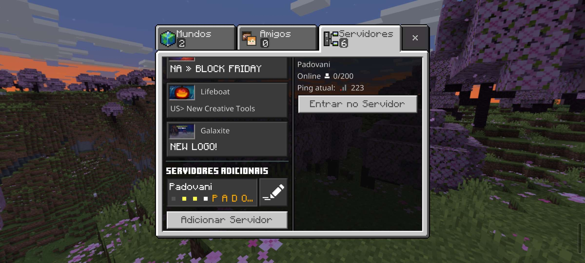

Pode! Vocês tem ate o dia 14/12 para se organizarem, ate esse dia vocês podem convidar amigos, fazer sugestões, organizar grupos e organizar casas, ate o dia 11/12 o PVP estara desabilitado, mas quando chegar o dia 12/12 o PVP estara habilitado! Se Cuide!
Caso queira ler todas as Regras, você pode clicar ao botão abaixo e ir para a Página de Regras!
Visitar as RegrasSim! Temos o Skywars para todos os membros terem multiplas escolhas, alem de ser divertido a mecanica dele e bem diferente dos outros.
Sim! A recompensa dos Eventos, seriam chaves, mas no ultimo Evento do servidor a recompensa será algo mais serio, e esse Evento será mais dificil, sem contar que a recompensa desse Evento pode ser da sua escolha!
Sim! Com algumas coisas faltando, mas o servidor ainda esta em Alpha o que significa que algumas coisas poderam mudar nesse periodo, então quaisquer dúvidas podem ou já foram respondidas nessa Página!
A ideia inicial deste servidor, foi mudando, inicialmente era para ser no Roblox, mas depois mudei para Minecraft e o site foi feito de ultima hora, para implementar algo a mais no servidor!